자동차정비산업기사 (2017-03-05 기출문제)
1과목: 일반기계공학
1. 하중 30kN을 지지하는 훅 볼트의 미터나사크기로 적절한 것은?(단, 나사재질의 허용응력은 60MPa이고, 나사의 골지름은 'd1=0.8×바깥지름'이다.)
- M20
- M24
- M28
- M32
(정답률: 52%)

2. 다음 중 기어의 언더컷이 발생하는 원인으로 옳은 것은?
- 잇수가 많을 때
- 이 끝이 둥글 때
- 잇수비가 아주 클 때
- 이 끝 높이가 낮을 때
(정답률: 72%)
3. 인장시험에 나타난 각 점 중 훅의 법칙(Hooke's law)이 적용되는 범위는?
- 비례한도
- 극강한도
- 파단점
- 항복점
(정답률: 69%)
4. 2개의 너트를 사용하여 충분히 죈 후 안쪽의 너트를 풀어 너트의 풀림을 방지하는 방법은?
- 2줄 나사에 의한 방법
- 로크 너크에 의한 방법
- 멈춤 나사에 의한 방법
- 자동 죔 너트에 의한 방법
(정답률: 78%)
5. 용접봉 피복제의 역할이 아닌 것은?
- 아크를 안정시킨다.
- 용착 금속의 급냉을 방지한다.
- 용착 금속의 탈산ㆍ정련작용을 한다.
- 용융점이 높은 슬래그를 많이 만든다.
(정답률: 80%)
6. 속이 빈 모양의 목형을 주형 내부에서 지지할 수 있도록 목형에 덧붙여 만든 돌출부는?
- 라운딩(rounding)
- 코어 프린트(core print)
- 목형 기울기(draft taper)
- 보정 여유(compensation allowance)
(정답률: 71%)
7. 회주철의 일반적인 탄소 함량은?
- 2~4%
- 1~1.5%
- 1.5~2%
- 3.0~3.6%
(정답률: 64%)
8. 압력제어밸브가 아닌 것은?
- 교축 밸브
- 감압 밸브
- 릴리프 밸브
- 무부하 밸브
(정답률: 69%)
9. 강의 표면에(Al)을 침투시켜 내식성을 증가시키는 침투법은?
- 크로마이징(Chromizing)
- 칼로라이징(Calorizing)
- 브론나이징(Boronizing)
- 실리콘나이징(Siliconizing)
(정답률: 79%)
10. 충격응력에 대한 설명으로 옳은 것은?
- 체적에 비례한다.
- 재료의 탄성계수에 반비례한다.
- 운동에너지를 증가시킴으로써 응력이 감소한다.
- 단면적이나 길이를 증가시킴으로써 응력이 감소한다.
(정답률: 53%)
11. 유압의 특성에 대한 설명으로 틀린 것은?
- 과부하에 대한 안정장치가 필요하다.
- 작은 힘으로 큰 출력을 얻을 수 있다.
- 열 발생에 대한 냉각장치가 필요 없다.
- 힘과 속도를 자유롭게 변속시킬 수 있다.
(정답률: 82%)
12. 압출가공에 관한 설명으로 틀린 것은?
- 속이 빈 용기의 생산에는 충격압출이 적합하다.
- 납 파이프나 건전지 케이스의 생산에 적합하다.
- 단면의 형태가 다양한 직선과 곡선 제품의 생산이 가능하다.
- 압출에 의한 표면결함은 소재온도가 가공속도를 늦춤으로써 방지할 수 있다.
(정답률: 72%)
13. 비교측정의 표준의 되는 게이지는?
- 한계 게이지
- 센터 게이지
- 게이지 블록
- 마이크로 미터
(정답률: 60%)
14. 저널과 베어링이 직접 미끄럼에 의해 접촉을 하는 베어링은?
- 슬라이딩 베어링
- 롤러 베어링
- 니들 베어링
- 볼 베어링
(정답률: 75%)
15. 그림과 같은 외팔보에 2kN의 집중하중이 작용할 때, 지지점 A에서의 굽힘응력은 약 몇 MPa인가? (단, 길이 50cm, 8.5cm×8.5cm)
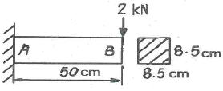
- 2.44
- 4.88
- 9.77
- 19.54
(정답률: 49%)
16. 선반작업에서 공작물의 지름D(mm), 1분간의 회전수 N(r/min)일 때, 절삭속도 V(m/min)는?
- V=πDN
- V=(πDN)/1000
- V=(πD)/(1000N)
- V=(πN)/(1000D)
(정답률: 72%)
17. 원심 펌프에서 송출압력 0.2N/mm2 , 흡입 진공 압력 0.⑤N/mm2 , 압력계와 진공계 사이의 높이차 600mm일 때, 펌프의 전양정(m)은? (단, 흡입관과 송출관의 지름은 같다.)
- 16.5
- 26.1
- 30.6
- 36.3
(정답률: 44%)
18. 비틀림모멘트(T)와 휨모멘트(M)를 동시에 받는 재료의 상당 비틀림모멘트(Te)는?
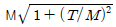
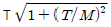
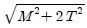
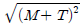
(정답률: 58%)
19. 다음 중 특징을 갖는 금속은?
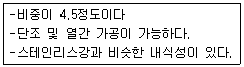
- 니켈(Ni)
- 구리(Cu)
- 아연(Zn)
- 티탄(Ti)
(정답률: 68%)
20. 그림의 단식블록 브레이크에서 브레이크에 가해지는 힘(F)은? (단, W는 브레이크 드럼과 브레이크 블록 사이에 작용하는 힘, μ는 마찰계수, f는 마찰력이다.)
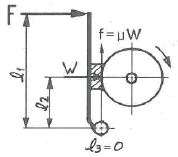
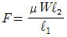
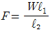
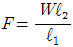
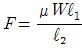
(정답률: 55%)
2과목: 자동차엔진
21. 전자제어 디젤엔진의 제어모듈(ECU)로 입력되는 요소가 아닌 것은?
- 가속페달의 개도
- 기관 회전속도
- 연료 분사량
- 흡기 온도
(정답률: 60%)
22. 실린더 압축압력시험에 대한 설명으로 틀린것은?
- 압축압력시험은 엔진을 크랭킹하면서 측정한다.
- 습식시험은 실린더에 엔진오일을 넣은 후 측정한다.
- 건식시험에서 실린더 압축압력이 규정값보다 낮게 측정되면 습식시험을 실시한다.
- 습식시험 결과 압축압력의 변화가 없으면 실린더 벽 및 피스톤 링의 마멸로 판정할 수 있다.
(정답률: 67%)
23. 디젤엔진의 노크 방지법으로 옳은 것은?
- 착화 지연기간이 짧은 연료를 사용한다.
- 분사 초기에 연료 분사량을 증가시킨다.
- 흡기 온도를 낮춘다.
- 압축비를 낮춘다.
(정답률: 69%)
24. 수랭식 엔진과 비교한 공랭식 엔진의 장점으로 틀린 것은?
- 구조가 간단하다.
- 냉각수 누수 염려가 없다.
- 단위 출력당 중량이 무겁다.
- 정상 작동온도에 도달하는 데 소요되는 시간이 짧다.
(정답률: 76%)
25. LPG엔진에서 주행 중 사고로 인해 봄베 내의 연료가 급격히 방출되는 것을 방지하는 밸브는?
- 체크 밸브
- 과류방지 밸브
- 액ㆍ기상 솔레노이드 밸브
- 긴급차단 솔레노이드 밸브
(정답률: 60%)
26. 밸브 스프링의 공진현상을 방지하는 방법으로 틀린 것은?
- 2중 스프링을 사용한다.
- 원뿔형 스프링을 사용한다.
- 부등 피치 스프링을 사용한다.
- 밸브 스프링의 고유 진동수를 낮춘다.
(정답률: 71%)
27. 운행차 배출가스 정밀검사 무부하검사방법에서 경유자동차 매연측정방법에 대한 설명으로 틀린것은?(오류 신고가 접수된 문제입니다. 반드시 정답과 해설을 확인하시기 바랍니다.)
- 광투과식 매연측정기 시료채취관을 배기관 벽면으로부터 5mm이상 떨어지도록 설치하고 20cm 정도의 깊이로 삽입한다.
- 배출가스 측정값에 영향을 주거나 측정에 장애를 줄 수 있는 에어콘, 서리제거장치 등 부속장치를 작동하여서는 아니된다.
- 가속 페달을 밟을 때부터 놓을 때까지의 소요시간은 4초 이내로 하고 이 시간 내에 매연농도를 측정한다.
- 예열이 충분하지 아니한 경우에는 엔진을 충분히 예열시킨 후 매연농도를 측정하여야 한다.
(정답률: 76%)
28. 총 배기량이 160cc인 4행정 기관에서 회전수 1800rpm, 도시평균유효압력이 87kgf/m 일 때 축마력이 22PS인 기관의 기계효율은 약 몇 %인가?(오류 신고가 접수된 문제입니다. 반드시 정답과 해설을 확인하시기 바랍니다.)
- 75
- 79
- 84
- 89
(정답률: 47%)
29. 자동차용 부동액으로 사용되고 있는 에틸렌글리콘의 특징으로 틀린 것은?
- 팽창계수가 작다.
- 비중은 약 1.11이다.
- 도료를 침식하지 않는다.
- 비등점은 약 197°C이다.
(정답률: 59%)
30. 전자제어 엔진에서 지르코니아 방식 후방 산소 센서와 전방 산소센서의 출력파형이 동일하게 출력된다면, 예상되는 고장 부위는?
- 정상
- 촉매 컨버터
- 후방 산소센서
- 전방 산소센서
(정답률: 71%)
31. 디젤엔진의 연료분사량을 측정하였더니 최대 분사량이 25cc이고, 최소분사량이 23cc, 평균 분사량이 24cc이다. 분사량의(+)불균율은?
- 약 2.1%
- 약 4.2%
- 약 8.3%
- 약 8.7%
(정답률: 60%)
32. 디젤엔진에서 착화지연의 원인으로 틀린 것은?
- 높은 세탄가
- 압축압력 부족
- 분사노즐의 후적
- 지나치게 빠른 분사시기
(정답률: 75%)
33. 전자제어 가솔린엔진에서 패스트 아이들 기능에 대한 설명으로 옳은 것은?
- 정차 시 시동 꺼짐 방지
- 연료 계통 내 빙결 방지
- 냉간 시 웜업 시간 단축
- 급감속 시 연료 비등 활성
(정답률: 74%)
34. 검사유효기간이 1년인 정밀검사 대상 자동차가 아닌 것은?
- 차령이 2년 경과된 사업용 승합자동차
- 차령이 2년 경과된 사업용 승용자동차
- 차령이 3년 경과된 비사업용 승합자동차
- 차령이 4년 경과된 비사업용 승용자동차
(정답률: 66%)
35. 점화순서가 1-3-4-2인 기관에서 2번 실린더가 배기행정이면 1번 실린더의 행정으로 옳은 것은?
- 흡입
- 압축
- 폭발
- 배기
(정답률: 69%)
36. 냉각수 온도 센서의 역할로 틀린 것은?
- 기본 연료 분사량 결정
- 냉각수 온도 계측
- 연료 분사량 보정
- 점화시기 보정
(정답률: 64%)
37. 최적의 점화시기를 의미하는 MBT(Minimum spark advance for Best Torque)에 대한 설명으로 옳은 것은?
- BTDC 약 10°~15° 부근에서 최대폭발압력이 발생되는 점화시기
- ATDC 약 10°~15° 부근에서 최대폭발압력이 발생되는 점화시기
- BBDC 약 10°~15° 부근에서 최대폭발압력이 발생되는 점화시기
- ABDC 약 10°~15° 부근에서 최대폭발압력이 발생되는 점화시기
(정답률: 72%)
38. 실린더 안지름이 80mm, 행정이 78mm인 기관의 회전속도가 2500rpm일 때 4사이클 4실린더 엔진의 SAE마력은 약 몇 PS인가?
- 9.7
- 10.2
- 14.1
- 15.9
(정답률: 41%)
39. 내연기관의 열역학적 사이클에 대한 설명으로 틀린 것은?
- 정적사이클을 오토사이클이라고도 한다.
- 정압사이클을 디젤사이클이라고도 한다.
- 복합사이클을 사바테사이클이라고도 한다.
- 오토, 디젤, 사바테사이클 이 외의 사이클은 자동차용 엔진에 적용하지 못한다.
(정답률: 86%)
40. 전자제어 연료분사장치에서 인젝터 분사시간에 대한 설명으로 틀린 것은?
- 급감속할 경우에 연료분사가 차단되기도 한다.
- 배터리 전압이 낮으면 무효 분사 시간이 길어진다.
- 급가속할 경우에 순간적으로 분사시간이 길어진다.
- 지르코니아 산소센서의 전압이 높으면 분사시간이 길어진다.
(정답률: 67%)
3과목: 자동차섀시
41. 적재 차량의 앞축중이 1500kg, 차량 총중량이 3200kg, 타이어 허용하중이 850kg인 앞 타이어의 부하율은 약 몇 %인가? (단, 앞 타이어 2개, 뒷 타이어 2개, 접지폭 13cm)
- 78
- 81
- 88
- 91
(정답률: 51%)
42. 앞바퀴 얼라이먼트 검사를 할 때 예비점검사항이 아닌 것은?
- 타이어 상태
- 차축 휨 상태
- 킹핀 마모 상태
- 조향핸들 유격 상태
(정답률: 52%)
43. 전자제어 제동장치(ABS)에서 페일 세이프(fail safe) 상태가 되면 나타나는 현상은?
- 모듈레이터 모터가 작동된다.
- 모듈레이터 솔레노이드 밸브로 전원을 공급한다.
- ABS 기능이 작동되지 않아서 주차브레이크가 자동으로 작동된다.
- ABS 기능이 작동되지 않아도 평상시(일반) 브레이크는 작동된다.
(정답률: 78%)
44. 전자제어 현가장치 제어모듈의 입ㆍ출력 요소가 아닌 것은?
- 차속 센서
- 조향각 센서
- 휠스피드 센서
- 가속페달 스위치
(정답률: 46%)
45. 자동차의 휠 얼라인먼트에서 캠버의 역할은?
- 제동 효과 상승
- 조향 바퀴에 동일한 회전수 유도
- 하중으로 인한 앞차축의 휨 방지
- 주행 중 조향 바퀴에 방향성 부여
(정답률: 66%)
46. 브레이크 라이닝 표면이 과열되어 마찰계수가 저하되고 브레이크 효과가 나빠지는 현상은?
- 페이드
- 캐비테이션
- 언더 스티어링
- 하이드로 플래닝
(정답률: 79%)
47. 차체의 롤링을 방지하기 위한 현가부품으로 옳은 것은?
- 로워 암
- 컨트롤 암
- 쇼크 업소버
- 스테빌라이저
(정답률: 72%)
48. 자동변속기 토크컨버터에서 스테이터의 일방향 클러치가 양방향으로 회전하는 결함이 발생했을 때, 차량에 미치는 현상은?
- 출발이 어렵다.
- 전진이 불가능하다.
- 후진이 불가능하다.
- 고속 주행이 불가능하다.
(정답률: 67%)
49. 브레이크장치의 프로포셔닝 밸브에 대한 설명으로 옳은 것은?
- 바퀴의 회전속도에 따라 제동시간을 조절한다.
- 바깥 바퀴의 제동력을 높여서 코너링 포스를 줄인다.
- 급제동 시 앞바퀴보다 뒷바퀴가 먼저 제동되는 것을 방지한다.
- 선회 시 조향 안정성 확보를 위해 앞바퀴의 제동력을 높여준다.
(정답률: 75%)
50. 전자제어 동력조향장치에 대한 설명으로 틀린것은?
- 동력조향장치에는 조향기어가 필요없다.
- 공전과 저속에서 조향핸들 조작력이 작다.
- 솔레노이드 밸브를 통해 오일탱크로 복귀되는 오일량을 제어한다.
- 중속 이상에서는 차량속도에 감응하여 조향 핸들 조작력을 변화시킨다.
(정답률: 67%)
51. 내경이 40mm인 마스터 실린더에 20N의 힘이 작용했을 때 내경이 60mm인 휠 실린더에 가해지는 제동력은 약 몇 N인가?
- 30
- 45
- 60
- 75
(정답률: 43%)
52. 차량주행 중 발생하는 수막현상(하이드로 플래닝)의 방지책으로 틀린 것은?
- 주행속도를 높게 한다.
- 타이어 공기압을 높게 한다.
- 리브 패턴 타이어를 사용한다.
- 트레드 마모가 적은 타이어를 사용한다.
(정답률: 79%)
53. 자동차 제동성능에 영향을 주는 요소가 아닌 것은?
- 여유 동력
- 제동 초속도
- 차량 총중량
- 타이어의 미끄럼비
(정답률: 76%)
54. 전자제어 제동장치인 EBD(electronic brake force distribution) 시스템의 효과로 틀린 것은?
- 적재용량 및 승차인원에 관계없이 일정하게 유압을 제어한다.
- 뒷바퀴의 제동력을 향상시켜 제동거리가 짧아 진다.
- 프로포셔닝 밸브를 사용하지 않아도 된다.
- 브레이크 페달을 밟는 힘이 감소된다.
(정답률: 54%)
55. 무단변속기(CVT)의 특징으로 틀린 것은?
- 가속성능을 향상시킬 수 있다.
- 연료소비율을 향상시킬 수 있다.
- 변속에 의한 충격을 감소시킬 수 있다.
- 일반 자동변속기 대비 연비가 저하된다.
(정답률: 74%)
56. 토크컨버터의 펌프 회전수가 2800rpm이고, 속도비가 0.6, 토크비가 4일 때의 효율은?
- 0.24
- 2.4
- 0.34
- 3.4
(정답률: 69%)
57. 기관의 동력을 주행 이외의 용도에 사용할 수 있도록 하는 동력인출장치(power take off)로 틀린 것은?
- 윈치 구동장치
- 차동 기어장치
- 소방차 물펌프 구동장치
- 덤프트럭 유압펌프 구동장치
(정답률: 73%)
58. 6속 DCT(double clutch transmission)에 대한 설명으로 옳은 것은?
- 클러치 페달이 없다.
- 변속기 제어모듈이 없다.
- 동력을 단속하는 클러치가 1개이다.
- 변속을 위한 클러치 액추에이터가 1개이다.
(정답률: 64%)
59. 릴리스 레버 대신 원판의 스프링을 이용하고, 레버 높이를 조정할 필요가 없는 클러치 커버의 종류는?
- 오번 형
- 이너 레버 형
- 다이어프램 형
- 아우터 레버 형
(정답률: 76%)
60. 차량 주행 시 조향핸들이 한쪽으로 쏠리는 원인으로 틀린 것은?
- 조향핸들의 축 방향 유격이 크다.
- 좌ㆍ우 타이어의 공기 압력이 서로 다르다.
- 앞차축 한쪽의 현가 스프링이 절손되었다.
- 뒷차축이 차의 중심선에 대하여 직각이 아니다.
(정답률: 61%)
4과목: 자동차전기
61. 다음 회로에서 전류(A)와 소비 전력(W)은?
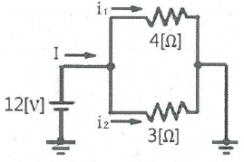
- I = 0.58A, P = 5.8W
- I = 5.8A, P = 58W
- I = 7A, P = 84W
- I = 70A, P = 840W
(정답률: 75%)
62. 자동차 전자제어모듈 통신방식 중 고속 CAN통신에 대한 설명으로 틀린 것은?
- 진단장비로 통신라인의 상태를 점검할 수 있다.
- 차량용 통신으로 적합하나 배선수가 현저하게 많아진다.
- 제어모듈 간의 정보를 데이터 형태로 전송할 수 있다.
- 종단 저항값으로 통신라인의 이상 유무를 판단할 수 있다.
(정답률: 80%)
63. 차량 전기 배선의 색 표기 방법으로 틀린 것은?
- Y - 노랑
- B - 갈색
- W - 흰색
- R - 빨강
(정답률: 85%)
64. 자동차에 사용되는 에어컨 리시버 드라이어의 기능으로 틀린 것은?
- 액체 냉매 저장
- 냉매 압축 송출
- 냉매의 수분 제거
- 냉매의 기포 분리
(정답률: 58%)
65. 광전소자 레인센서가 적용된 와이퍼 장치에 대한 설명으로 틀린 것은?
- 발광다이오드로부터 초음파를 방출한다.
- 레인센서를 통해 빗물의 양을 감지한다.
- 발광다이오드와 포토다이오드로 구성된다.
- 빗물의 양에 따라 알맞은 속도로 와이퍼 모터를 제어한다.
(정답률: 70%)
66. 방향지시등의 이상 현상에 대한 설명으로 틀린것은?
- 하나의 램프 단선 시 점멸 주기가 달라질 수 있다.
- 회로의 저항이 클 때 점멸 주기가 달라질 수 있다.
- 방향지시등 스위치 불량 시 점멸 주기가 달라질 수 있다.
- 방향지시등 릴레이(플래셔 유닛) 불량 시 모든 방향지시등 작동이 불량하다.
(정답률: 59%)
67. 크랭킹(크랭크축은 회전)은 가능하나 기관이 시동되지 않는 원인으로 틀린 것은?
- 점화장치 불량
- 알터네이터 불량
- 메인 릴레이 불량
- 연료펌프 작동 불량
(정답률: 66%)
68. 자동차 및 자동차부품의 성능과 기준에 관한 규칙에서 자동차 전기장치의 안전기준으로 틀린 것은?
- 차실 안의 전기 단자 및 전기 개폐기는 적절히 절연물질로 덮어 씌워야 한다.
- 자동차의 전기배선은 모두 절연물질로 덮어 씌우고, 차체에 고정시켜야 한다.
- 차실 안에 설치하는 축전지는 여유공간 부족 시 절연물질로 덮지 않아도 무관하다.
- 축전지는 자동차의 진동 또는 충격 등에 의하여 이완되거나 손상되지 않도록 고정시켜야 한다.
(정답률: 84%)
69. 충전 불량으로 입고된 차량의 점검 항목으로 틀린 것은?
- 벨트 장력
- 충전 전류
- 메인 퓨즈블 링크 상태
- 엔진 구동 시 배터리 비중
(정답률: 59%)
70. 12V 60AH 배터리가 방전되어 정전류 충전법으로 보충전하려고 할 때, 표준충전 전류 값은? (단, 배터리는 20시간율 용량이다)
- 3A
- 6A
- 9A
- 12A
(정답률: 55%)
71. 점화장치의 파워 트랜지스터 불량 시 발생하는 고장 현상이 아닌 것은?
- 주행 중 엔진이 정지한다.
- 공전 시 엔진이 정지한다.
- 엔진 크랭킹이 되지 않는다.
- 점화 불량으로 시동이 안 걸린다.
(정답률: 68%)
72. 리모컨으로 도어 잠금 시 도어는 모두 잠기나 경계진입모드가 되지 않는다면 고장 원인은?
- 리모컨 수신기 불량
- 트렁크 및 후드의 열림 스위치 불량
- 도어 록ㆍ언록 액추에이터 내부 모터 불량
- 제어모듈과 수신기 사이의 통신선 접촉 불량
(정답률: 64%)
73. 배터리 세이버 기능에서 입력신호로 틀린것은?
- 미등 스위치
- 와이퍼 스위치
- 운전석 도어 스위치
- 키 인(key in) 스위치
(정답률: 60%)
74. 점화장치에서 드웰시간이란?
- 파워TR 베이스 전원이 인가되어 있는 시간
- 점화2차 코일에 전류가 인가되어 있는 시간
- 파워TR이 OFF에서 ON이 될 때까지의 시간
- 스파크플러그에서 불꽃방전이 이루어지는 시간
(정답률: 62%)
75. 자동차의 전자동에어컨장치에 적용된 센서 중 부특성 저항방식이 아닌 것은?
- 일사량 센서
- 내기온도 센서
- 외기온도 센서
- 증발기온도 센서
(정답률: 71%)
76. 기동전동기의 전기자 코일과 전기자 철심이 단락되지 않도록 사용하는 절연체가 아닌 것은?
- 운모
- 종이
- 알루미늄
- 합성수지
(정답률: 63%)
77. 반도체의 장점이 아닌 것은?
- 수명이 길다.
- 소형이고 가볍다.
- 내부 전력 손실이 적다.
- 온도 상승 시 특성이 좋아진다.
(정답률: 84%)
78. 하드 타입 하이브리드 구동모터의 주요 기능으로 틀린 것은?
- 출발 시 전기모드 주행
- 가속 시 구동력 증대
- 감속 시 배터리 충전
- 변속 시 동력 차단
(정답률: 72%)
79. 자동차 검사기준 및 방법에서 전조등 검사에 관한 사항으로 틀린 것은?(관련 규정 개정전 문제로 여기서는 기존 정답인 1번을 누르면 정답 처리됩니다. 자세한 내용은 해설을 참고하세요.)
- 전조등의 변환빔을 측정하여야 한다.
- 공차상태에서 운전자 1인이 승차하여 검사를 시행한다.
- 전조등시험기로 전조등의 광도와 주광축의 진폭을 측정한다.
- 긴급자동차 등 부득이한 사유가 있는 경우에는 적차상태에서 검사를 시행할 수 있다.
(정답률: 57%)
80. 점화플러그의 구비조건으로 틀린 것은?
- 내열성이 작아야 한다.
- 열전도성이 좋아야 한다.
- 기밀이 잘 유지되어야 한다.
- 전기적 절연성이 좋아야 한다.
(정답률: 73%)
나사의 골지름은 'd1=0.8×바깥지름'이므로, 바깥지름이 큰 나사일수록 골지름도 커진다. 따라서, 나사크기가 커질수록 인장강도가 높아지므로, 하중 30kN을 지지하기에 적절한 나사크기는 "M32"이다.